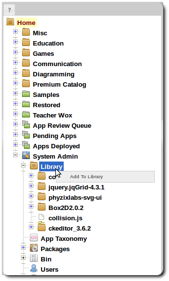
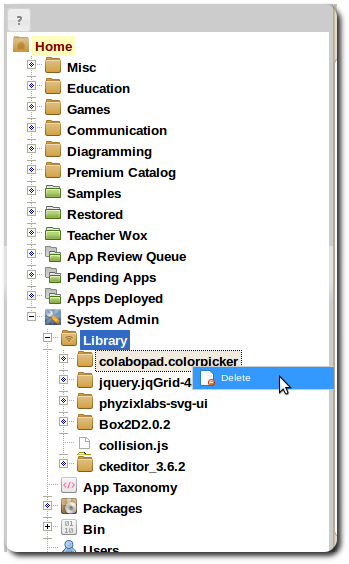

Resource Library
Managing Library Resources
The library management interface allows for the adding and deleting of resources. These resources can
be any static content that APPs can reference in their code. This includes Javascript libraries that may be shared
amongst many APPs. Files can be added to the library either individually or as a zipped folders.:

Adding files to Library
-
Right click on the Library item in the navigation menu and select add

Removing Files from library
-
Right click on a file in the navigation menu and select Delete
